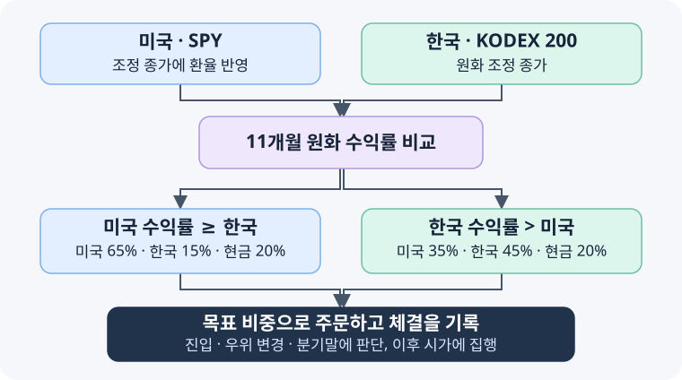

한·미 상대강도 배분은 매수 후 보유를 앞서는가
초록. 이 연구는 두 나라의 과거 ETF 수익률을 원화로 비교해 주식 비중을 조정하는 상대강도 전략을 평가한다. 동일 자산군의 매수 후 보유와 고정 비중 리밸런싱을 대조군으로 두고, 27개 전략을 12·24개월 공통 평가창에서 다시 실행하였다. 상대강도는 24개월 평가창 35개 중 28개에서 보유를 앞섰으며, 같은 시작월을 짝지은 순수익률 차이의 중앙값은 4.03%p였다. 두 전략의 목표 현금 확보 횟수는 같았다. 한국 종목에서 관찰된 추세 일관성의 초과성과는 이전 기간과 업종 매칭 방법에 따라 달라졌다. 결과는 관측 기간의 비용 후 성과를 설명하며, 독립 기간의 우위와 장기 하락장에서의 방어력은 판단을 유보한다.
1. 서론
1~2년 안에 투자금을 회수하려는 투자자에게는 최종 평가액과 실제 확보한 현금이 모두 중요하다. 주식 비중을 능동적으로 조정하면 유리했던 시장에 더 투자할 수 있지만, 투자자가 보유만 했을 때 부담하지 않을 거래비용도 발생한다. 같은 기간에 시작한 계좌끼리 비교하면 시작 시기의 영향을 줄이면서 이 차이를 관찰할 수 있다.
본 연구는 한·미 혼합 계좌의 상대강도 배분을 동일 자산군의 두 대조군과 비교한다. 매수 후 보유는 초기 비중으로 진입한 뒤 만기까지 보유하며, 고정 비중 리밸런싱은 분기마다 같은 목표 비중을 복원한다. 또 한국 개별주에서는 과거 수익률이 비슷한 종목 중 가격 경로의 일관성이 더 높은 종목을 고르는 규칙을 검증한다. 두 분석 모두 포트폴리오 결과를 주문 원장과 대조해 어떤 입력이 비중과 주문을 바꾸었는지 확인한다.
2. 관련 연구
2.1 단순 배분과 리밸런싱
DeMiguel 등은 추정 기반 포트폴리오와 동일비중을 표본 밖에서 비교하였다. 검토한 방법들이 샤프비율, 확실성 등가 수익률, 회전율 전반에서 단순 배분을 일관되게 앞서지 못했다는 결과는 능동 전략에 단순한 대조군이 필요한 이유를 보여준다. 본 연구의 고정 비중은 국가별 50%와 30%로 다르며, 투자 비중을 복원하는 과정 자체가 성과에 미치는 영향을 보유 대조군과의 차이로 관찰한다. [1]
Harvey 등은 정기 리밸런싱으로 발생하는 예측 가능한 거래 수요와 그 집행 비용을 분석했다. Jensen 등은 거래비용을 고려한 포트폴리오 구성에서 예측 신호의 가치와 실제로 구현 가능한 배분을 함께 평가하였다. 이번 비교는 국가 신호와 기본 거래비용을 고정한 상태에서 조정 폭을 줄이거나 주문을 늦추는 조건을 추가해, 성과가 집행 방식에 얼마나 민감한지 확인한다. [2] [3]
2.2 모멘텀과 가격 추세의 일관성
Jegadeesh와 Titman은 과거 수익률로 주식을 정렬해 중기 승자와 패자의 이후 수익률을 비교하였다. Moskowitz 등은 개별 자산의 과거 수익률이 그 자산의 이후 수익률과 어떻게 연결되는지 선물 자료에서 검증하였다. 본 연구의 상대강도는 두 시장의 과거 수익률을 서로 비교하는 배분 규칙이다. 절대 모멘텀과 가격 추세 조건은 각 시장 자체의 기준을 적용하므로 별도 후보로 평가한다. [4] [5]
Cai 등은 누적 수익률에 더해 그 수익률이 형성된 가격 경로의 일관성을 사용하였다. 본 연구에서는 그 발상을 한국 장기 매수 계좌에 적용했다. 추세 점수가 높은 종목과 비슷한 과거 수익률의 종목을 짝지으며, 규모와 거래대금 및 업종도 맞춘다. 업종 대분류와 상세 분류에서 결과를 각각 확인함으로써 추세 점수의 효과가 비교 가능한 종목을 어떻게 정의하느냐에 민감한지 살펴본다. [6]
2.3 재무 팩터와 전략 선택
Fama와 French는 수익성과 투자 요인을 포함해 주식의 횡단면 수익을 설명하였다. Novy-Marx는 자산 대비 매출총이익의 예측력을, Sloan은 이익의 발생액과 현금흐름 부분이 이후 이익과 수익률에서 보이는 차이를 조사하였다. 이번 미국 종목 비교는 당시 공개된 연차 자료로 선택 점수를 만들고, 공개 롱숏 요인 비교는 월별 합성 수익률로 타이밍을 검증한다. 두 결과는 투자 대상과 비용 가정이 달라 각 실험 안에서 해석한다. [7] [8] [9] [10]
Bailey와 López de Prado는 후보를 여러 번 검토하면 선택된 전략의 샤프비율이 높게 관측될 수 있음을 보였다. 본 연구는 전체 후보를 표에 제시하고, 이전 기간에서 관찰한 결과와 현재 평가창의 결과를 나란히 둔다. 매월 시작한 24개월 계좌는 거래 기간을 공유하므로 승수와 중앙값은 기술통계로 보고한다. [11]
3. 데이터와 실험 방법
3.1 자료와 평가창
카탈로그의 27개 전략은 혼합 포트폴리오 20개, 미국 종목 선택 4개, 공개 요인 타이밍 2개, 한국 추세 일관성 1개로 구성된다. 공통 결과표는 2021년 11월 이후에 시작해 2026년 9월까지 만기인 12개월 46개, 24개월 35개 창을 사용한다. 한국 확장 검증은 업종 매칭이 가능한 별도 과거 창을 포함하며, 해당 표에 기간별 창 수를 표시한다.
혼합형은 SPY, KODEX 200, 국가별 개별주 세 종목과 원화 현금을 담는다. 기본 배분은 SPY 40%, KODEX 200 20%, 미국 개별주 합계 10%, 한국 개별주 합계 10%, 현금 20%이다. 혼합형은 원화, 미국 종목 선택은 달러로 평가하였다. 미국 종목 실험은 과거 구성 목록 중 공시와 가격 이력이 연결되는 종목을 사용했고, 공개 요인 실험은 공개된 월별 합성 수익률을 사용했다. 한국 종목 비교는 배당을 제외한 가격수익률이며, 편도 비용 10bp와 상장폐지 직전 평가액의 50% 회수를 가정하였다.
3.2 상대강도 신호와 비중
의사결정 월을 t라 두고 P는 ETF의 조정 종가, X는 달러당 원화 환율을 뜻한다. 판단월을 제외하고 t−12월 말부터 t−1월 말까지의 11개월 수익률을 쓴다. 공통 시작월 이전 가격을 준비 구간으로 확보해 첫 계좌에도 같은 규칙을 적용하였다. 환율은 각 기준일에 앞서 확인할 수 있었던 관측값을 쓴다. 미국과 한국의 신호 수익률은 각각 식 (1)과 같다.
미국 수익률이 한국 이상이면 미국에 15%p를 더하고 한국에서 같은 비중을 뺀다. 한국 수익률이 높으면 반대로 이동한다. 이를 st ∈ {+1, −1}로 쓰면 식 (2)가 된다. 이력이 부족해 순위를 정할 수 없을 때는 st = 0으로 둔다. 국가 안에서는 미국 비중의 80%와 한국 비중의 3분의 2를 ETF에 배정하고, 나머지는 각 나라의 개별주 세 종목에 같은 비율로 나눈다.

3.3 주문, 비용과 성과 지표
상대강도는 진입 시점, 우위 국가가 바뀐 월말, 분기말에 목표를 갱신한다. 고정 비중 대조군은 진입과 분기말에만 기본 비중을 복원하고, 보유 대조군은 진입 주문과 만기 청산만 집행한다. 상대강도와 고정 비중의 비교에는 우위가 바뀐 달의 추가 주문 효과도 포함된다.
목표 금액은 주문을 결정하는 날의 계좌 평가액에 목표 비중을 곱해 정한다. 각 시장의 다음 체결 가능 시가에서 목표 금액을 가격으로 나눈 수량과 기존 보유 수량의 차이를 주문한다. 같은 시장의 매도를 먼저 반영하고 현금이 모자라면 매수량을 줄인다. 거래비용은 편도 10bp이며 미국 거래에는 환전비용 10bp를 추가했다. 만기에는 종목별 마지막 거래 가능일의 종가로 청산한다.
순수익률은 최종 현금을 초기자본으로 나눈 값에서 1을 뺀다. 표의 짝지은 차이 Δ는 동일 시작·만기월에서 전략과 대조군의 순수익률을 먼저 뺀 뒤 그 값들의 중앙값을 구한다. 최대낙폭은 혼합 계좌의 일별 평가액과 한국·미국 종목 및 합성 요인 실험의 월별 평가액에서 산출한다. 목표 확보는 초기자본 대비 15% 이상을 현금으로 확보한 계좌이며, 장중·장말 평가액으로 목표를 넘은 경우와 구분한다. 혼합 계좌에서 상승·하락은 보유 계좌의 실현 순수익률 부호를 사용한다. 한국 매칭 분석에서는 평가창 전체의 KODEX 200 수익률이 +10% 이상이면 상승, −10% 이하이면 하락, 그 사이이면 횡보로 분류한다. 두 장세 분류 모두 사후 요약에만 사용하였다.
3.4 한국 추세 일관성과 업종 매칭
과거 11개월 누적 수익률 상위 20%를 먼저 고른다. 이 집합에서 관측일이 충분한 종목의 일별 가격 수준을 경과일에 회귀한 결정계수 R2를 계산하고, 상위 20%에 동일 비중으로 투자한다. 평가 계좌는 분기마다 구성을 갱신한다. 단순 모멘텀 대조군은 누적 수익률 순위만 사용한다. 추가 검증에서는 동일 업종 안에서 과거 수익률 순위, 시가총액 순위, 거래대금 순위가 가까운 미선택 종목을 중복 없이 하나씩 대응시켰다. 당시 확인 가능한 업종 자료로 대분류는 월 최소 20쌍, 상세 분류 민감도는 월 최소 5쌍을 요구하였다.
4. 실험 결과와 비교 분석
4.1 전체 27개 전략
공통 평가 기간. 2021년 11월 진입부터 2026년 9월 만기까지다. 12개월 계좌는 2025년 9월 진입분까지 46개, 24개월 계좌는 2024년 9월 진입분까지 35개를 비교했다.
표 1은 27개 후보와 비교 기준을 함께 제시한다. 공개 요인은 시장 수익률을 기준으로 한 비용 전 합성 결과이며, 개별주·혼합형은 각 계좌의 매수 후 보유를 기준으로 한다. 수익률과 낙폭은 각 평가창 통계의 중앙값이다. 낙폭 관측 빈도와 거래 가정이 다른 투자군 간에는 표에서 순위를 합산하지 않았다.
| 전략 | 12개월 · 46창 | 24개월 · 35창 | ||||
|---|---|---|---|---|---|---|
| 수익률 | 낙폭 | 짝지은 차이 | 수익률 | 낙폭 | 짝지은 차이 | |
| 한·미 혼합형 | ||||||
| 매수 후 보유 | +25.77 | -12.31 | 0.00 | +58.89 | -14.49 | 0.00 |
| 한·미 상대강도 | +27.54 | -12.45 | +1.78 | +55.04 | -14.31 | +4.03 |
| 상대강도 주문 지연 | +27.50 | -12.16 | +1.88 | +55.20 | -14.26 | +3.34 |
| 상대강도 절반 조정 | +27.61 | -12.47 | +1.84 | +56.68 | -14.49 | +3.69 |
| 비중 축소 | +22.57 | -11.43 | -2.38 | +47.25 | -12.77 | -6.22 |
| 분기 고정 비중 | +24.52 | -10.97 | -1.52 | +46.55 | -13.26 | -6.32 |
| 편차 리밸런싱 | +25.87 | -12.03 | 0.00 | +49.21 | -13.21 | -2.63 |
| 가격 추세 | +18.40 | -8.46 | -6.94 | +37.31 | -10.97 | -13.02 |
| 추세 절반 보유 | +21.56 | -9.34 | -3.82 | +41.03 | -10.97 | -8.40 |
| 상대강도와 절반 추세 | +25.51 | -9.85 | -0.76 | +48.22 | -9.85 | -2.11 |
| 목표 전량 익절 | +15.25 | -5.76 | -10.86 | +15.52 | -6.13 | -43.37 |
| 목표 부분 익절 | +17.48 | -6.13 | -8.70 | +25.67 | -7.69 | -27.95 |
| 손절 | +20.31 | -11.52 | -6.40 | +46.55 | -15.71 | -16.44 |
| 절대 모멘텀 | +17.30 | -7.91 | -9.35 | +29.03 | -11.19 | -23.32 |
| 한·미 동일 비중 | +21.32 | -11.78 | -1.92 | +41.58 | -13.17 | -5.32 |
| 최소분산 | +24.85 | -11.08 | -2.39 | +50.12 | -12.90 | -10.06 |
| 위험균형 | +22.45 | -11.40 | -2.07 | +46.06 | -12.71 | -7.86 |
| 공분산 축소 최소분산 | +24.21 | -11.11 | -2.20 | +50.70 | -12.89 | -9.93 |
| 개별주 모멘텀 | +26.56 | -11.64 | -1.41 | +48.16 | -14.20 | -5.28 |
| 개별주 반전 | +20.78 | -10.58 | -2.96 | +41.66 | -13.64 | -10.44 |
| 변동성 목표 | +22.85 | -10.64 | -2.85 | +44.20 | -13.36 | -12.88 |
| 미국 종목 선택 | ||||||
| 매수 후 보유 | +13.72 | -10.57 | 0.00 | +31.19 | -11.96 | 0.00 |
| 동일 비중 리밸런싱 | +12.47 | -10.38 | -0.79 | +27.83 | -12.12 | -2.86 |
| 저발생액 | +13.01 | -10.57 | +0.47 | +29.41 | -15.25 | +0.56 |
| 모멘텀 | +11.03 | -11.19 | -0.04 | +34.11 | -12.42 | +1.85 |
| 수익성 | +9.99 | -10.23 | -2.83 | +21.22 | -11.87 | -6.24 |
| 가치 | +4.61 | -12.33 | -5.94 | +10.36 | -13.16 | -17.26 |
| 공개 요인 | ||||||
| 시장 수익률 | +18.39 | -8.47 | 0.00 | +43.35 | -9.12 | 0.00 |
| 고정 요인 바스켓 | +2.60 | -4.58 | -16.50 | +4.06 | -5.20 | -39.73 |
| 부호 타이밍 | +5.02 | -3.90 | -14.31 | +9.36 | -5.12 | -31.17 |
| 축소 타이밍 | +2.61 | -6.33 | -15.95 | +4.95 | -6.71 | -36.69 |
| 한국 종목 선택 | ||||||
| 매수 후 보유 | +0.29 | -14.82 | 0.00 | -1.64 | -18.01 | 0.00 |
| 동수 단순 모멘텀 | +1.30 | -25.87 | +4.50 | -1.88 | -29.27 | -0.45 |
| 모멘텀 순위 대응 | -0.97 | -22.65 | +0.99 | -7.07 | -29.23 | -1.76 |
| 추세 일관성 | +9.93 | -17.39 | +14.32 | +28.13 | -18.74 | +28.21 |
한·미 혼합형의 12개월 짝지은 차이는 상대강도 주문 지연이 +1.88%p로 가장 컸다. 24개월에는 기본 상대강도가 +4.03%p였고 절반 조정과 주문 지연은 각각 +3.69%p, +3.34%p였다. 미국 종목군에서는 12개월 저발생액과 24개월 모멘텀이 앞섰다. 공개 요인 타이밍 두 조건은 시장 수익률보다 낮았으며, 기준의 투자 성격은 3.1절에 제시하였다.
4.2 장세, 거래비용과 목표 현금 확보
| 평가창 | 창 수 | 보유 대비 | 고정 비중 대비 | 비용 2배, 보유 대비 |
|---|---|---|---|---|
| 12개월 전체 | 46 | +1.78%p | +2.67%p | +1.71%p |
| 12개월 상승 | 41 | +1.77%p | +3.24%p | +1.67%p |
| 12개월 하락 | 5 | +1.78%p | +1.57%p | +1.74%p |
| 24개월 전체·상승 | 35 | +4.03%p | +7.06%p | +3.65%p |
| 24개월 하락 | 0 | — | — | — |
24개월의 전략별 순수익률 중앙값은 보유 +58.89%, 상대강도 +55.04%, 고정 비중 +46.55%였다. 같은 시작월끼리 비교하면 상대강도가 35개 중 28개에서 보유를 앞섰다. 두 중앙값의 차이와 짝지은 차이의 중앙값이 서로 다른 이유는 전략별로 중앙에 해당하는 시작월이 달라질 수 있기 때문이다. 24개월 최대낙폭 중앙값은 각각 −14.49%, −14.31%, −13.26%였다. 목표 현금 확보는 12개월에 상대강도 33/46, 두 대조군 각각 32/46이었고, 24개월에는 모두 33/35였다.
4.3 신호가 주문을 바꾼 사례
2021년 11월에 시작한 한 24개월 계좌에서, 2023년 9월 29일에는 한국 ETF의 신호 수익률이 높아져 한국 쪽으로 목표 비중을 옮겼다. 모의 체결은 시장별 일정에 따라 나뉘었다. 미국에서는 10월 2일 SPY 약 0.4433주를 426.62달러에 매도했고, 한국에서는 10월 4일 KODEX 200 약 6.7968주를 32,480원에 매수했다. 이 계좌의 비용 후 만기 수익률은 상대강도 +12.40%, 고정 비중 +9.00%, 보유 +6.71%였다. 이 격차는 만기까지의 전체 주문과 보유 경로를 반영한다.
한국 추세 일관성 계좌에서는 2020년 10월 30일 국제약품을 9,170원에 매수했다. 진입 시 추세 결정계수는 0.721이었고, 다음 분기 선별에서 제외되어 2021년 1월 29일 8,700원에 매도했다. 같은 계좌의 미원상사는 2020년 10월 30일 97,800원에 진입해 2021년 4월 30일 216,500원에 매도하였다. 두 사례는 같은 선별 기준에서 매수한 종목의 손익이 갈릴 수 있음을 보여준다. 종목 선택의 기여는 아래의 매칭 대조군에서 포트폴리오 단위로 평가한다.
4.4 한국 추세 일관성의 업종 매칭 결과
| 업종 조건 | 기간 | 12개월 | 24개월 |
|---|---|---|---|
| 대분류 · 월 20쌍 이상 | 기존 기간 | +3.32%p (47창) | +12.33%p (35창) |
| 대분류 · 월 20쌍 이상 | 2021년 10월까지 만기 | −4.78%p (24창) | −32.58%p (12창) |
| 상세 분류 · 월 5쌍 이상 | 기존 기간 | +8.32%p (38창) | +27.37%p (26창) |
| 상세 분류 · 월 5쌍 이상 | 2021년 10월까지 만기 | −3.75%p (24창) | +6.14%p (12창) |
대분류에서 2021년 10월까지 만기 12개월의 차이는 상승장 17개에서 −11.21%p, 하락장 1개에서 −4.05%p였다. 24개월 매칭이 완결된 12개 창은 모두 상승장이었다. 업종 매칭을 요구하지 않은 보유 대조 실험에서는 2021년 10월까지 만기 24개월 상승장 14개와 하락장 10개에서 각각 −20.81%p와 −9.01%p였다. 기존 기간의 보유 대비 +28.21%p와 비교하면 성과가 기간에 따라 달라졌다.
상세 업종으로 범위를 좁히면 이전 기간의 24개월 차이 방향이 바뀌었다. 상세 분류의 월별 매칭 수 중앙값은 이전 기간 10쌍, 기존 기간 9쌍이었다. 같은 기간이라도 대분류와 상세 분류가 같은 종목을 평가하는 것은 아니므로, 두 결과의 격차를 업종 효과로 분리하기는 어렵다.
4.5 해석과 결론
관측된 24개월 창에서 상대강도는 같은 시작월의 보유와 고정 비중 대조군을 비용 후 앞섰다. 비용을 두 배 적용해도 짝지은 수익률 차이는 양수였다. 다만 고정 비중 전략의 낙폭 중앙값이 더 작았고, 목표 현금 확보율은 세 조건에서 같았다. 이 기간에서 확인한 상대강도의 기여는 동일 시작월에서의 수익률 개선에 한정된다.
하락 시기 검증은 12개월 혼합 계좌 다섯 창에 집중되어 있다. 평가창이 겹치고 전략을 이미 검토한 기간을 다시 사용했으므로, 28/35를 독립 승률로 보거나 통계적 우월성을 판단하기는 어렵다. 한국에서는 가격수익률과 월말 종가 체결, 상장폐지 회수율 가정도 결과에 영향을 준다. 후속 검증에서는 비교 기준을 고정하고 새로운 기간에 동일 규칙을 적용하며, 업종 매칭이 가능했던 하락장 창의 수를 별도로 보고할 필요가 있다.
재현 자료
EC2에서 혼합형 기본·두 배 비용의 모의 체결 164,179건과 164,196건을 계좌의 주문 시간 순서, 체결 수, 최종 현금 및 순수익률과 대조하였다. 한국은 업종 쌍과 체결, 상장폐지 회수 가정, 미청산 평가를 검증하였다. 전체 원장과 입력은 실행 환경에 보관하였다. 실행 경로와 장세별 산출물은 재현 기록에 정리했다. EC2 실행·검증 기록 · 전략 비교 코드 · 상대강도 장세별 집계 코드 · 기존 전략 카탈로그
참고문헌
- DeMiguel, V., Garlappi, L., & Uppal, R. (2009). Optimal Versus Naive Diversification: How Inefficient Is the 1/N Portfolio Strategy? The Review of Financial Studies, 22(5), 1915–1953. DOI
- Harvey, C. R., Mazzoleni, M. G., & Melone, A. (2025). The Unintended Consequences of Rebalancing. NBER Working Paper 33554. 원문
- Jensen, T. I., Kelly, B. T., Malamud, S., & Pedersen, L. H. (2026). Machine Learning and the Implementable Efficient Frontier. The Review of Financial Studies. DOI
- Jegadeesh, N., & Titman, S. (1993). Returns to Buying Winners and Selling Losers: Implications for Stock Market Efficiency. The Journal of Finance, 48(1), 65–91. DOI
- Moskowitz, T. J., Ooi, Y. H., & Pedersen, L. H. (2012). Time Series Momentum. Journal of Financial Economics, 104(2), 228–250. DOI
- Cai, C. X., Li, P., & Keasey, K. (2026). Trended Momentum. Journal of Financial and Quantitative Analysis. DOI
- Fama, E. F., & French, K. R. (2015). A Five-Factor Asset Pricing Model. Journal of Financial Economics, 116(1), 1–22. DOI
- Novy-Marx, R. (2013). The Other Side of Value: The Gross Profitability Premium. Journal of Financial Economics, 108(1), 1–28. DOI
- Sloan, R. G. (1996). Do Stock Prices Fully Reflect Information in Accruals and Cash Flows about Future Earnings? The Accounting Review, 71(3), 289–315. 논문
- Ehsani, S., & Linnainmaa, J. T. (2022). Factor Momentum and the Momentum Factor. The Journal of Finance, 77(3), 1877–1919. 저자 공개본
- Bailey, D. H., & López de Prado, M. (2014). The Deflated Sharpe Ratio: Correcting for Selection Bias, Backtest Overfitting, and Non-Normality. The Journal of Portfolio Management, 40(5), 94–107. 저자 원문